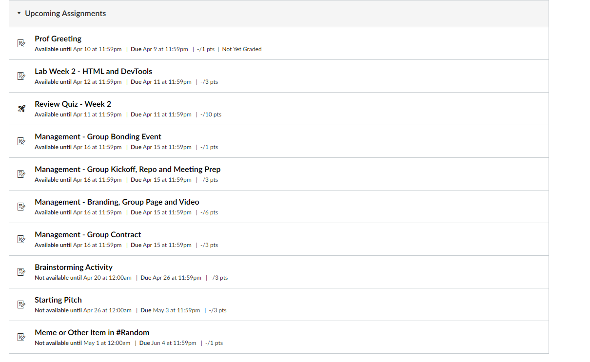

<!DOCTYPE html>
<html lang="en"></html>
<head>
    <title>My Journal</title>
    <meta name="author" content="Julius Tran">
    <link href="favicon.ico" rel="icon" type="image/x-icon" />
</head>
<body>
    <header id="top">
        <h1 style="text-align: center;">My Journal</h1>
        <div>
            <nav>
                <details>
                    <summary>Jump to Date</summary>
                    <a href="#2021-04-07"> April 7 </a>
                    <br>
                    <a href="#2021-04-08"> April 8 </a>
                    <br>
                    <a href="#2021-04-09"> April 9 </a>
                    <br>
                </details>
 
            </nav>
        </div>
    </header>
    <main>
        <hr>
        <section id ="2021-04-07">
            <h2 style="text-align: center;"><time datetime="2021-04-07">April 7</time></h2>
            <h3>Events</h3>
            <ul>
                <li>Had a boiled egg with bread for breakfast</li>
                <li>Microwave pasta for lunch</li>
                <li>Drove around the neighborhood</li>
            </ul>
            <h3>Accomplished Tasks</h3>
            <ul>
                <li>Went to ETHN 112C Office Hours</li>
                <li>Got assigned to my CSE 110 group and said hello in the Slack</li>
            </ul>
            <h3>To-Do</h3>
            <ol>
                <li>CSE 110 Lab 2</li>
                <li>CSE 110 Professor Greeting Assignment</li>
                <li>ETHN 112C Assignments</li>
                <li>DOC100D Assignments</li>
                <li>Math 180B HW2</li>
            </ol>
            <h3 >Summary of the Day</h3>
            <p>This was a ordinary Wednesday studying at UC Socially Distant. Also, I am going to put an audio file here.</p>
            <audio controls src="sd_0.wav"></audio>

        </section>
        <hr>
        <section id ="2021-04-08">
            <h2 style="text-align: center;"><time datetime="2021-04-08">April 8</time></h2>
            <h3>Events</h3>
            <ul>
                <li>Had French Toast for breakfast</li>
                <li>Instant noodles for lunch</li>
                <li>Teriyaki chicken and rice for dinner</li>
                <li>Somebody from the city government came to check our water meter</li>
            </ul>
            <h3>Accomplished Tasks</h3>
            <ul>
                <li>CSE 110 Professor Greeting Assignment</li>
                <li>ETHN 112C Assignments</li>
            </ul>
            <h3>To-Do</h3>
            <ol>
                <li>CSE 110 Lab 2</li>
                <li>DOC100D Assignments</li>
                <li>Math 180B HW2</li>
                <li>CSE 110 Review Quiz 2</li>
                <li>CSE 110 Group Assignments</li>
            </ol>
            <h3> Summary of the Day</h3>
            I think this was a fairly productive day. Also I'm posting a video here.
            <br>
            <video controls src="flower.webm" type="video/webm"></video>
        </section>
        <hr>
        <section id ="2021-04-09">
            <h2 style="text-align: center;"><time datetime="2021-04-09">April 9</time></h2>
            <h3>Events</h3>
            <ul>
                <li>Had a chocolate muffin for breakfast</li>
                <li>Microwave chicken and rice for lunch</li>
            </ul>
            <h3>Accomplished Tasks</h3>
            <ul>
                <li>CSE 110 Lab 2</li>
                <li>DOC100D Assignments</li>
            </ul>
            <h3>To-Do</h3>
            <ol>
                <li>Math 180B HW2</li>
                <li>CSE 110 Review Quiz 2</li>
                <li>CSE 110 Group Assignments</li>
            </ol>
            <h3>Summary of the Day</h3>
            There are a lot of CSE 110 assignments coming up. 
            I also learned that <b>b</b> is for drawing attention to text with boldface and <strong>strong</strong> is for indicating that text is important. <i>i</i> makes text italic,
            while <em>em</em> makes it italic while also emphasizing it. 
            The difference between <code>&ltb&gt</b></code> and <code>&ltstrong&gt</b></code> or <code>&lti&gt</b></code> and <code>&ltem&gt</b></code> might not be visible visually, but it matters to search engine crawlers and accessibilty software.
            <br>
            
        </section>
        <hr>
    </main>
    <footer>
        <nav><span><a href="#top">Top</a></span></nav>
    </footer>
</body>